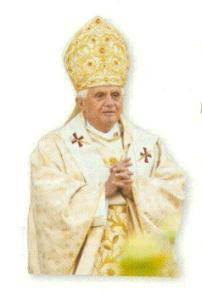
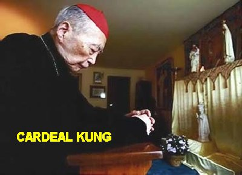
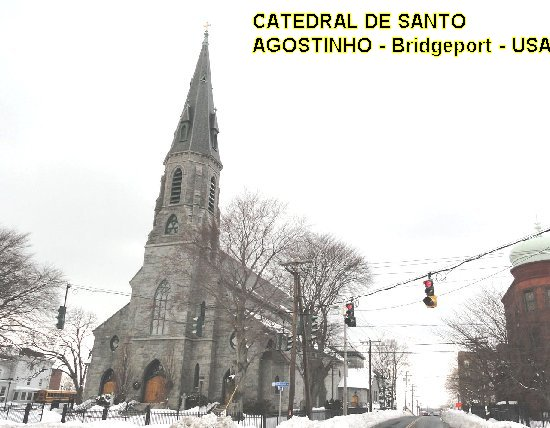
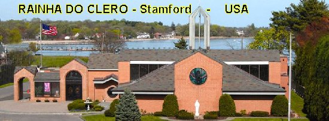
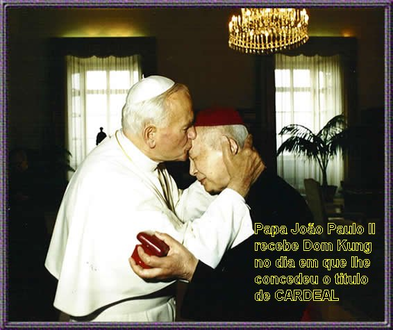
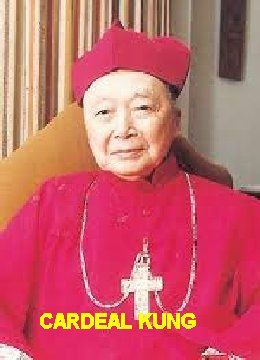

BISPO E CARDEAL
NÃO SEREI MAIS BISPO, NEM MESMO
CATÓLICO
Aparentemente referindo-se à
“Associação Patriótica”, o Papa Bento XVI disse recentemente: “A proposta para uma Igreja que seja independente
da Santa Sé na esfera religiosa é incompatível com a doutrina católica. A alegação de
algumas entidades, de se colocar acima dos Bispos e de guiar a vida da sua Igreja,
não corresponde a doutrina Católica”. Por outro
lado, o Papa João Paulo II, em sua mensagem do dia 3 de Dezembro de 1996 para a China,
também parecia se referir a Igreja Patriótica como sendo “uma Igreja que não responde nem à vontade do SENHOR JESUS,
nem a fé Católica”. Nessa mesma mensagem,
ele se refere à Igreja Subterrânea da China, como “uma preciosa jóia da Igreja Católica”. Disse também o Sumo Pontífice: “O Bispo deve ser a primeira testemunha da fé que professa
e prega, ao ponto de derramar o seu sangue como os Apóstolos fizeram, e tantos
outros pastores têm feito nos séculos em muitas nações, e também na China”.
Em 1958 aconteceu a primeira
sagração episcopal na “Igreja
Patriótica”. No dia 29 de Junho do mesmo ano,
o Papa Pio XII reagiu energicamente com a encíclica “Apostolórum Principis”, na qual estabelecia a pena de excomunhão automática aos infratores:
“Pelo exposto deriva que nenhuma outra
autoridade, a não ser a do pastor supremo, pode revogar a instituição canônica
atribuída a um Bispo; nenhuma pessoa ou assembléia quer de sacerdotes quer de
leigos, podem arrogar o direito de nomear Bispos; ninguém pode conferir
legitimamente a Consagração Episcopal sem antes ter a certeza da existência
do Mandato Apostólico (Cânon 953).
De forma que, para essa consagração
abusiva, que é um atentado gravíssimo à própria unidade da Igreja, é estabelecida
a “excomunhão” reservada “de modo especialíssimo” à Sé Apostólica, em que incorre automaticamente
(ipso facto) não somente
“quem recebe a consagração arbitrária”,
mas também “quem a confere”.
Era importante para os
comunistas conquistar o líder dos cristãos, que era o homem símbolo da
resistência ao regime comunista. Por isso, várias vezes prometeram a Dom Inácio
a liberdade imediata, se ele aderisse a “Igreja Patriótica”. A resposta do
Bispo foi fulminante: “Sou um
Bispo Católico. Se deixar o Santo Padre, não só não serei mais Bispo, mas nem mesmo
católico. Poderão me cortar a cabeça, mas não poderão nunca me afastar do meu dever”.
CARDEAL IN PECTORE
Em reconhecimento por sua fiel
luta em benefício do cristianismo na China, no dia 30 de Junho de 1979, o Papa
João Paulo II criou Dom Inácio Kung Pin-Mei Cardeal “in pectore”, quando ele
tinha 78 anos de idade e ainda cumpria pena de prisão perpétua na China, no mais completo
isolamento. Portanto, tal dignidade só foi efetivada no primeiro consistório que ele participou.
São chamados Cardeais “in pectore”
aqueles que o Papa cria em consistório, mas por
fortíssimas razões estando ausente, o seu nome será conservado “in pectore” (no peito, ou
seja, em segredo no coração), e que se dará a conhecer mais tarde, num futuro consistório
com a presença do Cardeal criado.
Por isso, Dom Inácio ficou sem saber da sua condição de membro do Colégio Cardinalício,
por mais de dez anos.
LIBERTAÇÃO DO CÁRCERE E PRISÃO
DOMICILIAR
Sua família sempre se empenhou
arduamente, buscando todos os caminhos legais para libertá-lo da prisão,
principalmente o seu sobrinho Joseph Kung, que morava nos Estados Unidos. Ele
movimentou a Anistia Internacional, a Cruz Vermelha e até o Governo dos Estados
Unidos, para que fizessem pressão sobre o Governo Comunista, a fim de alcançar a
libertação de Dom Kung. E assim, também em face da má saúde do Bispo, em 1985
Dom Inácio Kung teve sua prisão relaxada, passando ao regime de prisão
domiciliar, sob a “custódia
dos bispos cismáticos”, da Associação
Patriótica.
MENSAGEM DE FIDELIDADE

Depois de 30 anos de sofrimentos
e maus tratos no cárcere, diante da sempre presente pressão do governo
comunista, o mundo estava na expectativa para saber qual era o ânimo do Bispo
Inácio Kung?
O Cardeal Jaime Sin, Arcebispo
de Manila (Filipinas), que descendia de comerciantes chineses, foi a Shangai a
fim de lhe fazer uma visita de amizade. O governo da cidade chinesa tomando
conhecimento do fato, para acolher bem o visitante, organizou um banquete e
autorizou o Bispo Kung participar. Esta foi a primeira vez que ele ia encontrar
um Bispo da Igreja Católica Apostólica Romana, desde a sua prisão. E os
comunistas, sempre tramando, objetivando impedir qualquer contato direto entre os dois
prelados, numa grande mesa onde estavam mais de 20 autoridades comunistas da
Igreja Patriótica, colocaram os dois nas pontas extremas, nas cabeceiras da
grande mesa. Muito inteligente e sagaz, no final da refeição, o Cardeal Sin
sugeriu que para comemorar aquela fraternal refeição, cada um dos presentes
cantasse alguma canção. Quando chegou a sua vez, Dom Inácio Kung olhou fixamente
para o Cardeal Sin e cantou:
“Tu es Petrus, et super hanc petram aedificabo Ecclesiam meam”. (Tu és Pedro, e sobre esta pedra edificarei a MINHA Igreja,
disse JESUS). Embora os comunistas quisessem interrompê-lo, Dom Inácio cantou
até o fim, para mal estar dos membros da Igreja Patriótica.
Após o banquete, Aloísio Jin, da
Associação Patriótica Católica, que lhe usurpou o cargo como Bispo de Shangai,
interpelou-o: “O que estais
fazendo? Mostrando vossa posição?” Dom Inácio
Kung respondeu mansamente: “Não
é necessário mostrar a minha posição, porque ela nunca mudou.”
Assim, o Cardeal Jaime Sin pode
atestar a Santa Sé e ao mundo, que Dom Inácio Kung nunca havia cessado de ser
fiel à Igreja e ao Papa durante os longos anos de prisão.
CHEGADA AOS ESTADOS UNIDOS
Em 1988, depois de dois anos e
meio de prisão domiciliar, Joseph Kung conseguiu finalmente que seu tio fosse
posto em liberdade, para tratar de sua saúde nos Estados Unidos. Entretanto, as
acusações que pesavam sobre Dom Inácio Kung, nunca foram canceladas.
Dom Kung chegou aos Estados
Unidos no dia 4 de Maio de 1988. Dom Walter Curtis, Bispo da Diocese de
Bridgeport (Connecticut-USA) convidou-o a permanecer na residência junto com os
Sacerdotes da Diocese, aposentados. Dom Inácio lá permaneceu por nove anos, até
Dezembro de 1997.
Um pequeno fato mostra como Dom
Inácio Kung sofreu com o frio e a umidade, durante os longos e gelados invernos
na China. Ele observando as boas e funcionais instalações da
“Casa Rainha do Clero”
, onde se hospedou,
a qual tinha aquecimento central e água quente no inverno, comentou com seu
sobrinho: “No Céu
deve ser assim...”
E ali nos Estados Unidos, em
plena liberdade, Dom Inácio Kung, apesar da sua idade, trabalhava muito, todos
os dias, mas era primordialmente um homem de oração, mais de oração do que de
ação. Para ele, a vida interior era a alma da sua fidelidade e da sua
resistência ao regime comunista.
Certo dia, um seminarista que
admirava a sua personalidade, perguntou-lhe como fazia para rezar na prisão,
sem livros, sem Bíblia, sem Missa, e mesmo sem um Rosário? Ele simplesmente
respondeu ao jovem que os comunistas nunca tiraram o seu Rosário. O Seminarista
perplexo e sem entender, perguntou: “Mas como? Como o senhor fazia para esconder o Rosário, quando diariamente
era meticulosamente revistado na prisão?”
O Bispo Dom Inácio então lhe mostrou os dez dedos da mão e disse: “Aqui está o meu Rosário”.
COMEÇO DA IGREJA DO SILÊNCIO
CHINESA

Na Festa da Natividade de MARIA
SANTÍSSIMA, 8 de Setembro de 1988, o Bispo Dom Inácio Kung celebrou a Santa
Missa na Capela “RAINHA
DO CLERO”, em Stamford, na presença de
católicos chineses, muitos dos quais também já tinham sido encarcerados pela fé.
Na homilia ele disse: “Há
trinta e três anos, na Diocese de Shangai, 30 Sacerdotes, um grande número de
irmãos e irmãs, centenas de leigos católicos foram detidos e encarcerados. Isso
era o começo da “Igreja do
Silêncio” chinesa. Desde
aquela data, nós, católicos, somos submetidos a todos os tipos de perseguições.
Durante esses longos e angustiosos anos, um grande número de religiosos e católicos
leigos de ambos os sexos, fortificados por sua profunda fé, têm carregado corajosamente
a sua cruz. Alguns deles foram enclausurados; outros enviados para campos de trabalhos
forçados; alguns separados de seus parentes, forçados a deixar suas famílias
e a pátria; outros foram expulsos de suas escolas, perderam seus empregos;
e alguns pagaram o preço final, sacrificando as suas preciosas vidas. Por
que suportaram tais sofrimentos? Eles não eram loucos, mas gente muito razoável.
Levaram e ainda levam o sofrimento pacientemente, sustentados pela graça de DEUS
e pela insaciável chama de sua ardente fé nos Mandamentos Divinos”.
Ele concluiu suas palavras, exortando os presentes
à fidelidade, e rezou por aqueles que continuam sofrendo pela fé. E
rezou também, pelos católicos que tendo se filiado à cismática
“Igreja Patriótica”
, separaram-se da verdadeira Igreja Católica.
FIÉL,
FIRME E INDOMÁVEL
Finalmente em Junho de 1991, Dom
Inácio teve a grande alegria de ir a Roma para receber, no Consistório do dia
29, o chapéu cardinalício, daquela nomeação realizada há doze anos, mas mantida
oculta desde o dia da sua criação, e então, recebeu o título de
“Cardeal Presbítero de São Sisto III”
(Xisto). Em presença do Papa, o Bispo
com mais de 90 anos de idade, levantou-se da sua cadeira de rodas,
deixou de lado a bengala, andou alguns passos e caiu de joelhos aos pés do
Pontífice. O Papa João Paulo II emocionado levantou-o e lhe impôs o chapéu
cardinalício dizendo:
“Eminência, este evento é um tributo à vossa humilde perseverança na necessária
comunhão com Pedro”. Depois, ali permaneceu
até que o “Purpurado”
voltasse à sua cadeira de rodas,
enquanto o auditório com mais de 900 pessoas presentes na Sala de
Audiências do Vaticano dava retumbante salva de palmas.
APELO PELA LIBERDADE DA IGREJA
EM SEU PAÍS
Durante seus últimos doze anos
de vida, o Cardeal Inácio Kung celebrou a Santa Missa em várias Igrejas, em
Congressos Católicos, e diante de câmaras de TV. Deu também entrevistas e fez
homilias sempre procurando conduzir a atenção do mundo livre, para as
perseguições que sofre a Igreja Católica Apostólica Romana na China. Ele
continuava como o paladino e o inspirador dos 9 a 10 milhões de católicos
chineses da Igreja subterrânea e por isso, odiado pelo governo comunista.
Foi-lhe perguntado:
“Quais os eventos positivos e os negativos
do século XX?” O Purpurado respondeu:
“O pior evento do século é a perseguição
religiosa na China, que dura 50 anos.”
E o positivo? O Cardeal respondeu que eram o restabelecimento da liberdade
religiosa em alguns países, como a Rússia e a Polônia, e a fé existente em seu
país. E disse mais: “A
história deverá recordar a fé solidíssima da Igreja Católica na China.
Protegidos por NOSSA SENHORA DA CHINA, muitíssimos sacerdotes e fiéis, alguns
até muito jovens, não descuidaram dos seus deveres de cristãos, desafiando o
cárcere, o derramamento de sangue e até o martírio. Não traíram o Sumo Pontífice
e nem a DEUS. Em nossos longos anos de encarceramento experimentamos a amorosa
companhia Divina. Os Bispos Católicos Chineses e toda a Igreja Católica Chinesa,
todos nós estamos muito agradecidos ao SENHOR DEUS que quis ser glorificado por
ela”.
CONSIDERADO CRIMINOSO E EXILADO
OFICIALMENTE
No dia 12 de Fevereiro de 1998,
o Diretor e Chefe do Ofício Religioso Chinês afirmou: “Inácio Kung Pin Mei cometeu um sério crime por dividir
o país e provocar danos a seu povo”. No
mês seguinte o Cardeal Kung ao tentar renovar o seu passaporte em Nova York, no Consulado
da China, o documento foi confiscado, ficou retido. Com isso, aos 97 anos de idade
ficou oficialmente exilado nos Estados Unidos. Permaneceu no seu martírio vivo,
sofrendo a cada momento, com saudades de seu rebanho na China, carregando sua
cruz no coração e nas suas orações suplicando pela conversão e bem estar do povo
chinês, assim como pela fidelidade dos seus irmãos aos Mandamentos Divinos.
O NÚMERO DE CATÓLICOS TRIPLICOU
 Nas comemorações dos seus
98 anos de idade em Julho de 1999, mais de 500 pessoas residentes em diversos
países, vieram a Stamford para honrar e comemorar com o Cardeal, símbolo vivo da
resistência anticomunista e da Igreja do Silêncio na China. Entre eles estavam
25 católicos chineses que também tinham sofrido todo conjunto de maldades e
covardias, durante longos anos, nas prisões do regime comunista.
Nas comemorações dos seus
98 anos de idade em Julho de 1999, mais de 500 pessoas residentes em diversos
países, vieram a Stamford para honrar e comemorar com o Cardeal, símbolo vivo da
resistência anticomunista e da Igreja do Silêncio na China. Entre eles estavam
25 católicos chineses que também tinham sofrido todo conjunto de maldades e
covardias, durante longos anos, nas prisões do regime comunista.
Na ocasião, o Papa João Paulo II
enviou-lhe, por intermédio do Bispo de Bridgeport, a mensagem:
“Enquanto vos reunis com a família e
amigos para celebrar uma solene Missa de Ação de Graças, envio-lhe cordiais
saudações e a afirmação de minha proximidade na oração. Agradeço a DEUS
Todo-Poderoso pelas graças dadas a toda a Igreja através do seu testemunho de
fidelidade ao Evangelho”.
Calorosamente respondeu o Cardeal Kung
dizendo entre outras palavras:
“Agradeço penhoradamente a vossa saudação e a vossa benção. Este ano assinala também
50 anos de perseguições a Igreja Católica da China. O Clero e os fieis são gratos a
NOSSO SENHOR JESUS CRISTO por ter selecionado os últimos dos seus filhos como testemunhas
da Igreja Una, Santa, Católica e Apostólica. Graças a proteção amorosa de NOSSA SENHORA
DE SHESHAN, o número dos católicos na China triplicou durante este meio século de
sofrimentos e perseguições”.
MORTE DE UM HERÓI DO
CRISTIANISMO
O Cardeal Inácio Kung Pin Mei
faleceu no dia 12 de Março de 2000, na casa do seu sobrinho Joseph Kung, que
descreveu seus últimos momentos: “O Cardeal Kung despediu-se de nós de um modo muito pacífico. Durante
as semanas, quando sentia algum sofrimento, dizia baixinho:”“SANTA MÃE, ajudai-me; JESUS me socorra;
SÃO JOSÉ me ajude”.“Sete
horas antes do falecimento, 70 amigos que residiam em três outros Estados realizaram
uma cerimônia religiosa, celebrando uma Santa Missa. Ele recebeu a Sagrada Comunhão
de Monsenhor Horgan, mantendo-se em estado perfeitamente lúcido. Todavia, pouco
tempo depois da cerimônia, simplesmente passou a apertar o Rosário contra o
peito, até que perdeu toda a consciência antes da morte que logo aconteceu,
partindo para os carinhosos braços de DEUS na eternidade”.

PALAVRAS INESQUECÍVEIS
Dizia o Cardeal:
“Apesar da contínua e terrível
perseguição comunista, a Igreja Católica Subterrânea é muito forte. A maioria
dos religiosos escolhe não pertencer à Igreja Patriótica, criada pelos
comunistas, não assistir as suas Missas, e não receber sacramentos de padres
ordenados nela. Mesmo sob um abominável clima opressivo, as vocações religiosas
para a Igreja Subterrânea continuam a florescer. Também as pessoas que de fato
amam e confiam em DEUS preferem frequentar a Igreja Subterrânea, embora
permaneça em continuo risco a sua segurança pessoal. A vigilância comunista é
implacável e terrível, mas a Igreja Subterrânea é corajosa e cheia de fé. Por
isso, a Igreja Católica na China continuará até o fim dos tempos. A confiança e
a esperança do povo cristão chinês estão sedimentadas nas palavras de JESUS, que
disse: “A Igreja sempre
prevalecerá sobre as portas do inferno”. Nós seremos martirizados, perseguidos e aprisionados, mas a Igreja
viverá”.


 PRÓXIMA PÁGINA
PRÓXIMA PÁGINA
PÁGINA ANTERIOR
RETORNA AO ÍNDICE